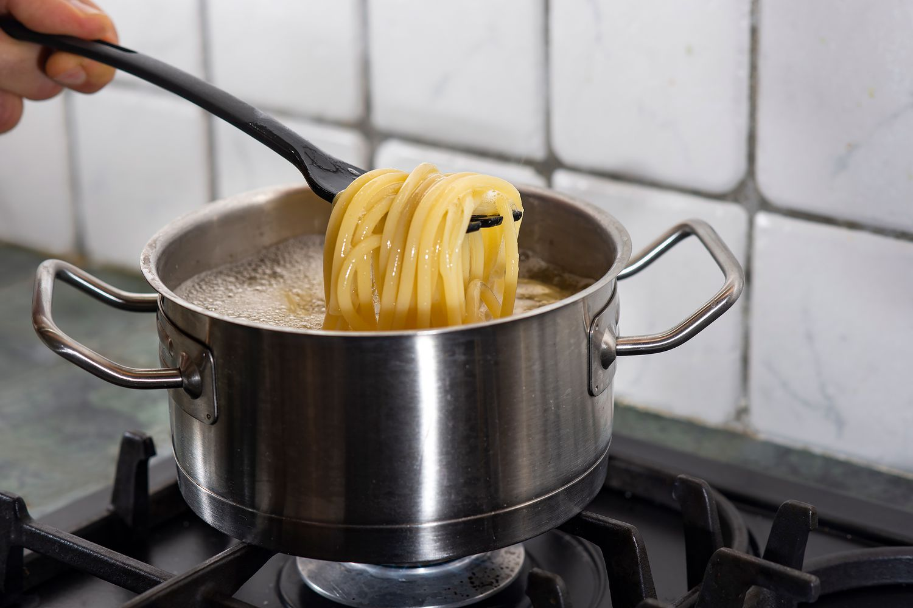

My recipe - Fettuccine Alfredo
Introduction:
Fettuccine Alfredo, a classic italian pasta dish that is creamy and full of flavor. I chose this recipe because it's simple to make, but tastes so so delicious. I like this recipe as it's easy to cook, can find in almost every restaurant and always has a perfect taste to it.
Ingredients:
Prep Time: 10min Cook Time: 15min Total Time: 25min Servings:4

- Fettuccine pasta - 24 ounces
- Butter - ½ cup
- Heavy cream - 1 cup
- Salt and pepper
- garlic salt - 1 dash
- Parmesan cheese - 1 cup, grated

Instructions
- Fill a large pot with water, add a pinch of salt, and wait for it to boil and be around 100°C.
- Add the fettuccine pasta and cook according to the package instructions.
- Drain the pasta and set aside, reserving about 1/2 cup of the pasta water.
- In a large skillet, melt the butter over medium heat.
- Add the heavy cream to skilley and stir until combined.
- Slowly whisk in the grated parmesan cheese until the sauce is smooth and creamy.
- Season the sauce with salt and black pepper to taste.
- Add the cooked Futteccine pasta to the skillet and toss to coat in the Alfredo sauce.
- Serve hot and if you'd like you could add extra pasmesan for better taste.
